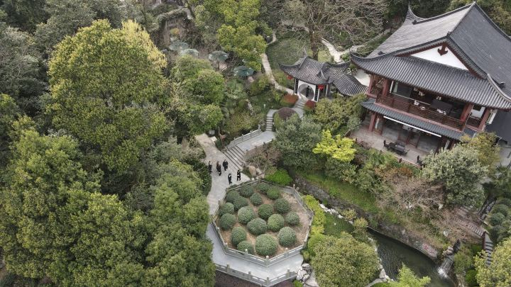

测一测 你的杭州人格是?
在西湖、诗意与杭帮菜之间，
找到你进入杭州文化的方式。
回答几个问题，生成属于你的杭州人格、旅行路线与味觉推荐。
正在为你生成杭州人格……
你的杭州人格是：苏轼
你进入一座城市的方式，从来不是打卡，而是寻找它被写下、被建成、被记住的痕迹。
人格解析
你更容易被人物、历史、典故、文化厚度打动。对你来说，杭州不只是“好看”，它更像是一座被人一步步塑造出来的城市：有人在这里写诗，有人在这里做官，有人在这里留下名字。而你想顺着这些痕迹，去理解西湖。
人物介绍
苏轼不仅是写下西湖名句的人，也是杭州文化记忆中最重要的人物之一。对很多人来说，西湖之所以不只是风景，也正因为它总和苏轼这样的名字连在一起：被观看、被书写，也被留在现实空间里。
推荐菜：东坡肉
这道菜适合你，不只是因为它有名。它更像是一种把杭州的人文气质浓缩进味道里的方式。东坡肉对应的，是一种更厚重、更沉静、更有人物感的杭州。它带着文人记忆、历史痕迹，也带着“慢下来才能体会”的层次。
推荐旅游路线
苏东坡纪念馆 → 苏堤漫步 → 花港观鱼 / 雷峰塔周边 → 传统杭帮菜餐厅
这条路线适合慢慢走。它不是为了最快看到最多景点，而是为了让你先进入“人”的历史，再回到“湖”的风景。
苏东坡纪念馆
从这里开始，你会先遇到“人”。在进入西湖的景之前，先进入苏轼留下的文化痕迹。
苏堤漫步
沿着苏堤慢慢走，你会更容易把西湖看成一处被塑造、被命名、被书写过的空间。
花港观鱼 / 雷峰塔周边停留
不需要太赶，把历史感重新放回现实空间，感受杭州层层叠叠的时间感。
推荐饭店
味庄 / 传统杭帮菜老牌餐厅
你更适合去强调经典杭帮菜、传统感较强、适合慢慢坐下来吃一顿饭的地方。
- 经典
- 稳重
- 有来历
- 可以慢慢坐下来感受
你适合的杭州，不是第一眼就结束的杭州。 你会在故事里看风景，也会在风景里继续寻找人。
你的杭州人格是：白素贞
你会先走进烟雨里的桥和塔，再把这座城的光、水和故事慢慢收进记忆。
人格解析
你对杭州的偏好，常常落在桥、雨、湖面和塔影之间。你不急着把景点看完，更愿意把脚步放慢，在细雨和水汽里找到西湖最耐看的层次。
人物介绍
白素贞是西湖文化中最具辨识度的人物之一。断桥、雷峰塔与湖上烟雨，把她的故事长期留在杭州的空间想象里，也让“西湖”不仅是风景，更是一段会被反复讲述的城市记忆。
推荐菜：清汤鱼圆
这道菜入口清润、质地柔滑，和你偏爱的雨景西湖很契合。它不抢味，却很耐吃，像湖面薄雾一样把细节慢慢展开。
推荐旅游路线
断桥残雪一带 → 白堤沿线 → 雷峰塔远眺点 → 湖边晚餐
这条路线强调“桥—湖—塔”的连续视野。天气有一点水汽时，会更接近你想要的西湖气质。
断桥一带
先从桥面与湖面的关系开始，适合边走边看，不需要太快。
白堤沿线
路段平缓、视野开阔，树影和水面交替出现，适合停停走走。
雷峰塔远眺点
把塔影放进远景，桥和湖的画面会更完整。
推荐饭店
西湖边临水杭帮菜餐厅
更适合选窗边位置，能同时看到湖面和行人，把吃饭和看景连起来。
- 视野开阔
- 清润口味
- 适合雨天或傍晚
- 离湖边步行线近
你适合的杭州，是雨丝落在桥面上的杭州。 你会在水光与塔影之间，记住它最柔软的一面。
你的杭州人格是：乾隆
你记住一座城市的方式，不是靠它说了什么，而是靠它留给你的茶香、山路和那种被精心安放过的清雅。
人格解析
你更容易被氛围、细节、清雅、山水与审美感打动。对你来说，杭州最迷人的地方，不是厚重地告诉你“它有多重要”，而是让你在茶香、山路、景色和一顿饭里，慢慢体会到这座城市很轻、很稳、很讲究的一面。
人物介绍
乾隆与杭州、西湖的关系，更多不在于“创造”这片风景，而在于他通过南巡、题咏与品茶，把西湖和龙井茶一起放进了更讲究、清雅、可细细游赏的江南想象里。
十八颗御茶树

“十八棵御茶”是乾隆与杭州最有名的龙井典故之一。相传乾隆南巡到龙井时，曾在狮峰山下胡公庙前采茶，后来将当地十八棵茶树封为“御茶”，并令其岁岁采制、进贡宫中。也因为这个故事，龙井茶不再只是杭州的一种茶，而渐渐成了西湖山水、茶香与清雅审美的一部分。
推荐菜：龙井虾仁
这道菜适合你，是因为它几乎把杭州最清雅的一面都放进去了：茶、春天、轻盈、细节、不过度张扬的鲜味。它不是很厚重，却很讲究；不是很热闹，却很容易让人记住。这就是你会喜欢的杭州。
推荐旅游路线
中国茶叶博物馆双峰馆区 → 龙井路周边茶园视野 → 西湖边安静停留 → 清雅型杭帮菜餐厅
这条路线不是为了“看完”，而是为了让你进入杭州更轻、更细的那一层。你适合从茶开始，从山路开始，再慢慢回到湖边。
中国茶叶博物馆双峰馆区
从茶开始认识杭州，会很适合你。这里像是一把钥匙，让你先进入龙井、西湖与杭州气质之间的联系。
龙井路周边茶园视野
这里不是很强烈、很热闹的景，但很适合会被细节和氛围打动的人。
西湖边安静停留
不需要密集打卡，让风、光和茶香慢慢进入记忆。你适合的是会留白的杭州。
推荐饭店
山外山 / 清雅型杭帮菜餐厅
你更适合去环境与菜都偏清雅、和山水园林关系更近的餐厅。
- 清雅
- 留白
- 细腻
- 季节感
- 景和味道都刚刚好
你适合的杭州，不需要说得太满。 你会在茶香、山路和轻一点的味道里，认出它真正动人的地方。
你的杭州人格是：杨万里
你记住一座城市的方式，更像记住一幅画面：风、荷叶、光和那个刚好属于西湖的夏天。
人格解析
你更容易被画面、季节、诗意与意境打动。对你来说，杭州最迷人的地方，不一定是最有分量的历史，而是某个刚刚好的瞬间：风吹过荷叶、水面泛光、景色轻轻成立。你理解西湖的方式，更像是在感受它，而不是定义它。
人物介绍
杨万里写下了很多人一想到西湖荷花就会想起的诗句。对你来说，西湖最动人的地方，也正是这种被诗留住的季节感：不是抽象的“美”，而是一种很具体、很有画面感的夏日西湖。
推荐菜：龙井虾仁
这道菜适合你，不是因为它最厚重，而是因为它够轻、够鲜、够像西湖留给人的那种清亮感。对你来说，杭州的味道更像一幅有空气感的画，而龙井虾仁正好保留了这种轻盈、细腻和季节气息。
推荐旅游路线
曲院风荷 → 湖边荷花与夏日观景路线 → 安静停留点 → 更有景观感与诗意感的餐厅
这条路线适合在夏天或有荷景的时候体验。你不需要很满的安排，你更适合顺着画面、光线和风去记住西湖。
曲院风荷
从荷花开始认识西湖，会非常适合你。这里让“诗意”不是一句话，而是可以被真实看到的画面。
湖边荷花与夏日观景路线
你适合顺着季节去看西湖，而不是只看最标准的景点。
安静停留点
对你来说，杭州最动人的时刻往往发生在停下来之后。给风景一点时间，它才会真正进入记忆。
推荐饭店
西湖边更偏景观与诗意感的餐厅
你更适合去环境里有空气感、有季节感、坐下来就像继续待在风景里的餐厅。
- 轻盈
- 有画面感
- 季节感强
- 适合慢慢看景
- 吃饭像在延续一段西湖记忆
你适合的杭州，是会突然在一个瞬间成立的杭州。 你会先记住风景里的诗意，再慢慢记住这座城。
你的杭州人格是：苏小小
你偏爱的杭州，常常藏在桥边柳影、短短石阶和可以久坐的茶点时光里。
人格解析
你更适合从小尺度的景进入杭州：一座桥、一段湖边窄路、一处能坐下来的窗边位置。你不追求铺满行程，而是把注意力放在细节和停留时间上。
人物介绍
苏小小是杭州地方记忆中非常鲜明的人物。西泠桥与相关传说让她长期与西湖相连，也让这座城市除了山水与名胜之外，多了一层温柔、轻巧、可回望的文化气质。
推荐菜：桂花藕粉
桂花藕粉清甜柔滑、香气轻，适合慢慢吃。它和你偏好的步调一致：不需要太强烈，却能把杭州的细腻留在口中很久。
推荐旅游路线
西泠桥 → 孤山小路 → 湖边茶点停留 → 黄昏时分慢步返回
路线不求长，重点在于沿线的树影、水面和可停留的空间。
西泠桥
从桥边开始，把节奏慢下来，先看水面和柳枝的变化。
孤山小路
路段安静，适合边走边看，不需要密集打卡。
茶点停留
找一个靠窗的位置坐一会儿，让风景和味道自然衔接。
推荐饭店
湖边茶点与轻食小馆
适合选择空间不大、安静、可久坐的店，重点是窗边视野和轻口味。
- 桂花系甜点
- 轻食与热茶
- 靠近湖边步行线
- 节奏从容
你适合的杭州，是桥边柳影里慢慢展开的杭州。 你会在细小的景和轻柔的味道里，把它记得很久。